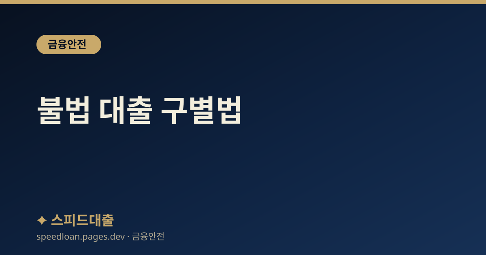

불법 대출 구별법
등록 금융회사와 불법 사금융을 구별하는 확실한 방법과 불법 업체의 전형적인 수법을 정리했습니다.

왜 구별이 먼저인가
급하게 돈이 필요할 때일수록, 그 업체가 합법인지부터 확인하는 습관이 필요합니다. 불법 사금융은 처음에는 친절하고 빠르게 돈을 내주는 것처럼 보이지만, 실제로는 법정 한도를 크게 넘는 이자와 불법 추심으로 이어지는 경우가 많다고 알려져 있습니다. 한 번 얽히면 빠져나오기 어렵기 때문에, 돈을 받기 전에 걸러내는 것이 가장 중요합니다.
가장 확실한 기준은 그 업체가 제도권 금융회사이거나 정식으로 등록된 대부업체인지 여부입니다. 광고 문구나 상담원의 말이 아니라, 공적으로 조회되는 등록 정보만 믿어야 합니다. 아래 내용은 일반적인 참고 정보이며, 개별 상황은 반드시 공식 기관을 통해 직접 확인하시기 바랍니다.
30초 만에 확인하는 방법
다음 절차만 지켜도 대부분의 불법 업체를 걸러낼 수 있습니다. 조회에 시간이 오래 걸리지 않으니 계약 전에 반드시 직접 확인해 보시기 바랍니다.
- 금융소비자정보포털 '파인(fine.fss.or.kr)'에서 제도권 금융회사인지 조회합니다.
- 대부업체라면 등록대부업체 통합조회에서 상호와 등록번호가 실제로 등록되어 있는지 확인합니다.
- 업체가 알려준 등록번호를 그대로 믿지 말고, 조회 결과에 나오는 대표번호로 다시 전화해 같은 업체가 맞는지 대조합니다.
- 조회되지 않거나 정보가 일치하지 않는 업체는 예외 없이 거래를 중단해야 합니다.
특히 조회 화면에 나오는 대표번호와 실제로 나에게 연락한 번호가 다르다면, 등록 업체의 이름만 도용한 사칭일 수 있으므로 더욱 주의해야 합니다. 상호가 비슷하게 흉내 낸 이름인지도 함께 살펴보시기 바랍니다.
불법 업체의 전형적 신호
아래 신호 중 하나라도 보인다면 정식 금융회사가 아닐 가능성이 높습니다. 여러 개가 겹칠수록 위험 신호로 이해하시면 됩니다.
- 전화, 문자, SNS로 먼저 대출을 권유하며 접근합니다.
- '무조건 승인', '신용불량자 가능', '당일 100% 실행' 같은 문구를 사용합니다.
- 법정 최고금리인 연 20%를 넘는 이자를 요구합니다.
- 수수료, 보증금, 예치금이라는 명목으로 돈을 먼저 입금하라고 합니다.
- 신분증 사진, 통장과 체크카드 실물, 가족 연락처를 요구합니다.
- 정식 계약서 없이 메신저 대화만으로 계약을 진행하려 합니다.
상황별 대처 시나리오
선입금을 요구받은 경우: 정식 금융회사는 대출 실행 전에 어떤 명목으로도 돈을 먼저 받지 않습니다. 수수료나 보증금을 먼저 보내야 대출이 나온다는 말은 전형적인 사기 수법이므로, 이 시점에서 대화를 멈추는 것이 안전합니다.
신분증과 통장을 보내라고 하는 경우: 신분증 사진과 통장은 비대면 계좌 개설과 대포통장 개설에 악용될 수 있습니다. 요구에 응하지 않는 것이 원칙이며, 이미 전송했다면 즉시 아래 신고 절차를 밟는 것이 좋습니다.
이미 돈을 빌린 경우: 계약서, 이체 내역, 통화 녹음, 문자 대화를 모두 보관해 두면 초과 이자 반환이나 신고 과정에서 중요한 증거가 됩니다. 상환 압박이 심하더라도 혼자 판단하지 말고 공적 기관의 도움을 받는 편이 낫습니다.
불법 추심을 당했다면
불법 사금융은 돈을 빌려줄 때보다 갚으라고 할 때 더 위험해지는 경우가 많습니다. 다음과 같은 행위는 정당한 채권 추심의 범위를 넘어선 것으로, 참고 삼아 대응 방향을 정하시기 바랍니다.
- 하루에도 수십 통씩 반복해서 전화하거나 협박성 문자를 보냅니다.
- 가족, 직장 동료, 지인에게 대신 알리거나 대신 갚으라고 연락합니다.
- 직장이나 집으로 찾아오겠다며 위협합니다.
- 빌린 돈보다 훨씬 많은 금액을 갑자기 요구합니다.
이런 상황에서는 통화 녹음과 문자 캡처 등 증거를 모아 두고, 협박이나 폭언은 경찰(112)에, 불법 대출과 초과 이자는 금융감독원(1332)에 신고하시기 바랍니다.
피해 구제 채널 정리
혼자 해결하려 하지 말고 공적 채널의 도움을 받는 것이 가장 안전합니다. 초기에 대응할수록 피해를 줄일 수 있는 경우가 많습니다.
- 금융감독원 불법사금융 신고센터(전화 1332)에 상담과 신고를 접수합니다.
- 법정 최고금리를 넘는 이자는 무효로 볼 수 있으며, 반환을 청구할 수 있습니다.
- 협박이나 불법 추심을 당했다면 경찰(112)에 즉시 신고합니다.
- 채무자대리인 무료 지원 등 법률 도움이 필요하면 대한법률구조공단(132)에 문의합니다.
- 상환 자체가 어려운 상황이라면 신용회복위원회(1600-5500)의 채무조정도 함께 알아볼 수 있습니다.
신고를 망설이게 만드는 것도 불법 업체의 흔한 수법입니다. '신고하면 더 힘들어진다'거나 '가족에게 알리겠다'는 협박에 위축될 필요가 없습니다. 오히려 그런 협박 자체가 불법 추심의 증거가 되므로, 기록해 두고 위 채널에 함께 알리시기 바랍니다. 늦었다고 생각되는 시점에도 신고와 상담은 언제든 도움이 됩니다.
자주 묻는 질문
등록번호가 광고에 적혀 있으면 안심해도 되나요?
번호가 적혀 있다는 사실만으로는 부족합니다. 다른 업체의 번호를 도용하거나 가짜 번호를 적어 두는 경우가 있으므로, 파인과 등록대부업체 통합조회에서 상호와 등록번호가 실제로 일치하는지 직접 확인해 보시는 것이 안전합니다.
조회는 되는데 이자가 너무 높습니다. 합법인가요?
등록 업체라도 법정 최고금리인 연 20%를 넘는 이자를 요구하면 그 초과분은 인정되지 않습니다. 등록 여부와 별개로 금리 조건이 과도하다면 계약 전에 다시 검토하시고, 이미 초과 이자를 냈다면 1332에 상담해 보시기 바랍니다.
이미 신분증 사진을 보냈는데 어떻게 해야 하나요?
명의도용 방지 서비스와 계좌정보 통합관리 서비스를 통해 비대면 계좌 개설과 휴대폰 개통을 차단하는 조치를 검토하실 수 있습니다. 또한 1332에 상황을 알리고 후속 안내를 받는 것이 좋습니다.
불법 업체에서 빌린 돈은 안 갚아도 되나요?
스스로 판단하기보다 반드시 공적 기관의 도움을 받으시기 바랍니다. 초과 이자의 무효 여부나 대응 방법은 사안마다 다르므로, 1332나 대한법률구조공단(132)에서 정확한 안내를 받는 것이 안전합니다.
공식 참고 기관
본 사이트의 콘텐츠는 아래 공공·공식 기관의 공개 자료를 참고하여 작성하며, 구체적인 조건과 최신 제도는 해당 기관에서 직접 확인하시기 바랍니다.
본 사이트는 대출을 직접 제공하거나 중개하지 않으며, 금융상품 가입을 권유하지 않습니다. 모든 정보는 일반적인 참고용이며, 실제 대출 가능 여부, 한도, 금리, 조건은 금융회사 심사와 개인 신용상태에 따라 달라질 수 있습니다.